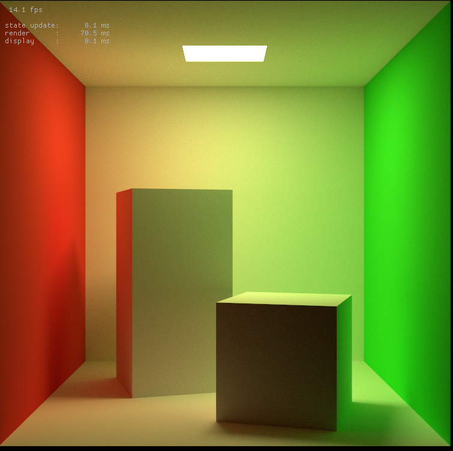

GPU Path Tracer Using NVIDIA OptiX
Team member: Changyi Yang, Zhexu Luo, Yuxuan Peng, Shaoqiang Sun
Abstract
In this study, we primarily focus on reconstructing Project 3 by incorporating GPU acceleration using NVIDIA OptiX, a GPU ray-tracing engine based on CUDA. The primary objective is to leverage ray-tracing function APIs provided by OptiX and computational resource support from GPUs to refine and expedite multiple applications.
Upon mastering the NVIDIA OptiX API, we constructed a rudimentary path tracer that supports both direct and global illumination. This path tracer exhibits exceptional real-time rendering speed. Subsequently, we integrated an AI denoiser available in NVIDIA OptiX, resulting in a scene with significantly reduced noise. Lastly, we discussed potential future directions for our elementary renderer.
Technical Approach
In this section, we provide a concise overview of the various components of NVIDIA OptiX and how they function collectively. Essentially, the engine can be divided into two primary segments: the GPU side and the CPU side.
| An Overview of Nvidia OptiX engine |
GPU part
The primary objective of this section is to execute the core components of ray tracing on the GPU. GPUs offer superior performance in parallel-computing tasks compared to CPUs. Moreover, GPUs have a larger graphics memory capacity, which allows them to support more complex ray-tracing tasks. This whole part is written in .cu format, which is CUDA C++ source file.
The required values for ray tracing are grouped and passed to the GPU through various methods, such as SBT and LaunchParams (which will be discussed in the CPU section). The starting point of the entire ray tracing process is the __raygen__rg() function, which generates rays, traces them through the scene, accumulates radiance results, and writes the final color to the output frame buffer. Most graphics algorithms are implemented within this function, such as global illumination.
Subsequently, it is necessary to define how each type of ray interacts with meshes. There are three kinds of intersection functions to implement: _closesthit_, _miss_, and _anyhit_. Their calling order and functions vary:
_anyhit_is invoked during traversal when a potential primitive intersection is encountered. This allows the application to reject intersections, terminate traversal, or gather information about primitives encountered during traversal. However, using any-hit programs should be approached with caution, as they impose a high performance cost on RTX hardware._closesthit_is called when a ray intersects a primitive. This program typically calculates derived geometric quantities resulting from the intersection, performs material shading, and returns the results to the ray-generation program through the ray payload._miss_is invoked when no intersection is found during ray traversal. It is often utilized to provide a background or environment shader.
Note that each ray type need to define these three kinds function. In other words, the number of intersection functions should be
CPU part
Once the ray tracing functions have been primarily implemented in the CUDA file, the subsequent step involves creating a launch program utilizing the OptiX method. Every essential piece of data, including the program's pipeline settings, CUDA stream, mesh data, and Shader Binding Table (SBT), is accurately computed and passed to the GPU in this stage. When executing the pipeline, the previously programmed CUDA file for ray tracing can be retrieved through our settings, and the functions within can be invoked to achieve the corresponding objectives with the proper passed information.
In the following section, we outline the process of creating every component required for a GPU to function optimally, step by step.
(1) Program Pipeline
Here, we create a pipeline that is needed for GPU to do parallel computing. The process for creating OptiX program pipeline is mainly divided into the following parts:
Initialize OptiX and create CUDA context
Set the usage information of GPU devices and CUDA stream to allocate memory and execute CUDA functions.
Create a module and make it embedded with CUDA file (in PTX form)
After creating the context, in order to improve compilation efficiency and facilitate management, we need to create an OptiX module. We will convert the previous CUDA file into PTX code for embedding. Set custom module compilation options and pipeline compilation options. Prepare previous CUDA context. All these parameters will be accepted by
optixModuleCreateFromPTX()API and a new module will be generated in this way.This module will be associated with various rendering programs below. These programs could find the corresponding CUDA functions in the module and execute them.
Create ray tracing program groups (PG)
After preparing the module, we need to create several program groups to execute different functions in the module. (such as ray generation, miss, hit, etc.). The generation API is
optixProgramGroupCreate(). We need to implement the setting of the type of this program, the reference module, and the name of the entry function in CUDA. For example, if we are going to create a ray generation program, we will set its type to beOPTIX_PROGRAM_GROUP_KIND_RAYGEN.Noted that multiple programs will be created for some function. For example, the program dealing with hitting problem will consider both radiance rays and shadows rays, which means that two different functions should be included.
Create acceleration structure
Unlike the traditional BVH acceleration method in part 2 of Project 3-1, OptiX adopts a built-in Triangle Geometry Acceleration Structure (GAS). Specifically, we copy vertex data and material index data from host memory to device memory. Construct the
BuildInputstructure of OptiX, which is the input type of OptiX acceleration structure and describe the triangle GAS to be constructed, including vertex buffer, material index buffer, and other information. Allocate a temporary buffer in device memory and useoptixAccelBuild()to construct a triangle acceleration structure, generating uncompressed output buffer. Eventually return atraversalhandlefor the whole acceleration structure.If possible, use
optixAccelCompact()to implement the compression of the structure, output a more efficient and compressed acceleration structure handle. This handle will be passed to the launch parameters and will be used in ray tracing.
(2) SBT
OptiX adopts shader binding table (SBT), which links geometric data with program groups and their parameters, making it easy for reference. For example, the ray tracing part in CUDA file can use function optixGetSbtDataPointer() to fetch the triangle mesh data in SBT. The basic component of SBT is record, each primitive and program group has its own record. For example, for miss program group, each primitive has a hit record. A record consisted of two parts: a header specifies which program group it belongs to, the data it carries, such as vertices coordinates and normal vector. During execution, the record can be found with proper setting.
The advantage of SBT is that it can save the program entry address in a buffer in advance, avoiding the overhead of searching every time, thus improving the efficiency of ray tracing. In addition, SBT also allows for free configuration of program entries, customizing multiple functions based on different object types and scene requirements, further improving ray tracing efficiency and rendering quality.
(3) Compilation and Execution
After the pipeline is also created, input the pipeline, CUDA stream, necessary parameter information, and image size to function optixLaunch, which will invoke _reygen_ function and start rendering.
Problems Encountered and Solutions
Complex Environment Setting and Build
Setting up the Nvidia OptiX development environment proved challenging due to our limited experience in configuration and compilation. We required support from CUDA, CUDA toolkit, OptiX SDK, GPU driver, and Visual Studio, but encountered version compatibility issues. For instance, finding a free community version of Visual Studio 2017 for CUDA 10 was difficult. Additionally, the CMake specifies certain compute architecture requirements that our GPU might not meet.
We invested considerable time in adjusting versions to construct a suitable environment for our examples to run. We also modified the CMakeLists.txt file to lower the compute architecture from sm_60 to sm_50, successfully building the project.
Unfamiliarity with New and Professional Fields
Nvidia OptiX is a industry level ray tracing engine, mainly aiming users who are specialist in computer graphics. For beginners like us, there is almost no detailed instructions about how each parts combine together and work. Especially, there is few guidelines for beginners about how to build the whole project from scratch and use the library. Fortunately, we find a tutorial that is relatively more acceptable. However, the tutorial is written a few years ago and only supports OptiX SDK version lower than 7.3. Moreover, it is still very brief and so vague in some parts. We have not contacted CUDA before, which has added even more difficulty for us.
In our solution, we install OptiX SDK 7.1 to learn the tutorial. We have spent a great deal of time reading and studying the raw source code to understand the principles. For CUDA, we will search for the relevant information whenever we encounter a problem. It takes about 20 hours for us to fully understand what exactly each part does and how these parts combine together to get a full path tracer.
Involvement of parts with Lower Correlation with Graphics
In the class projects, we were provided with most auxiliary functions, parameter configurations, and calling relationships, allowing us to focus on implementing core functions. However, in our final project, we were responsible for passing necessary data between functions, parts, and between GPU and CPU. This increased the workload significantly. Additionally, we faced challenges with file formats, as we had to learn how to load model files and use the information inside properly. Although our example provided a library to read .obj file, we should be able to render .dae file for comparison between project 3-1 and our path tracer.
Ultimately, we found a website to convert .dae files to .obj files, enabling the comparison. We also utilized the tiny_obj_loader library to load .obj files and pass the loaded data to the appropriate variables within the program.
Lessons learned
The biggest lesson we have learned is that coming into contact with a professional and unpopular field that we are completely unfamiliar with will take more time than we expected. The learning process of CUDA and OptiX has been a bit more challenging than we expected, such as how to understand the logical order and connections between functions on GPU devices and functions on hosts. However, we believe that all of this is worth it, at least in the end we have understood the method of using CUDA to assist in acceleration.
Moreover, we have a experience of editing others existed code and structure, we fully understand the difficulty of adding features to a system that’s already complex. It may be more convenient to redesign the whole structure from scratch and write a code that’s fully understand by you.
Lastly, in the denoiser section, we feel how Deep Learning influences other fields, the AI-denoiser works much better than our expected. Maybe in some days, no deliciated and well math-foundation algorithms are needed, everything can be achieved with enough parameters and training.
Results
Rendering Speed
The improvement in rendering speed is quite amazing. For most of cases, the rendering time is larger than 20 times. Here is a comparison of rendering similar beast model.
| GPU rendering time: | CPU rendering time: |
Path Tracer
In this project, we implement a path tracer that supports direct and global illumination. To achieve this, we utilize the previously mentioned architecture and introduce some new values.
First, we need to identify which primitives are light sources. We add an emitted value to each mesh for this purpose. This variable is included in the record and passed to the intersection function through the SBT.
The key modifications are made in the _closesthit_radiance() and raygen_rg() functions.
In the _closesthit_radiance() function, after computing the intersection point p and its normal, we calculate w_in by calling cosine_sample_hemisphere(). This is crucial for indirect lighting as it provides the ray direction for the next bounce. We then use importance sampling for the light source based on the light position and intersection point p. Next, we compute the weight, representing the contribution of direct illumination from the area light source to the current intersection point. We add the radiance of the light, multiplied by the weight, to the intersection point's radiance.
For the raygen_rg() function, we use iteration to achieve global illumination, as the GPU side does not directly support recursion. When computing the intersection point, we call traceRadiance() and pass current intersection point, ray direction and the ray payload into it. The traceRadiance() function calculates the next intersection point and allows us to obtain the emission and diffusion radiance. At the end of the iteration, the current intersection point is updated to the next intersection point, and the ray direction is updated to the next ray direction, i.e.,
Here is a series of photos shows how our direct and global illumination works. As you can see, the scene becomes lighter as bounce number increases and the rendering time also goes higher.
| Bounce Number | 0 bounce | 1 bounce | 2 bounce | 3 bounce | 32 bounce |
|---|---|---|---|---|---|
| Pictures |  | ||||
| Rendering Time | 4 | 5 | 14 | 20 | 70 |
AI Denoiser
Instead of utilizing importance sampling, we employ the integrated AI denoiser. This general denoiser, developed by Nvidia using Deep Neural Networks, simplifies the process of denoising images. By providing the images and relevant parameters, the denoiser automatically produces noise-free images. The resulting output is quite impressive in quality. However, you can also notice that the rendering time will increase when denoiser is on.
| Denoiser On | Denoiser Off | |
|---|---|---|
| Sponza |  | |
| Rendering Time | 0.05 s | 0.03 s |
| Minecraft | ||
| Rendering Time | 0.002 s | 0.003 s |
Reference
Reference websites for CUDA and OptiX
CUDA: https://docs.nvidia.com/cuda/index.html
OptiX: NVIDIA OptiX 7.6 - Programming Guide
https://raytracing-docs.nvidia.com/optix7/guide/index.html#introduction#overview
https://developer.nvidia.com/blog/how-to-get-started-with-optix-7/
Basic implementation framework (CS184 Project 3) for ray tracing
Project instruction documents:
https://github.com/ingowald/optix7course
https://cs184.eecs.berkeley.edu/sp23/docs/proj3-1
https://cs184.eecs.berkeley.edu/sp23/docs/proj3-2
Project reference code:
https://github.com/orgs/cal-cs184-student/teams/luozhexu3
https://github.com/orgs/cal-cs184-student/teams/luozhexu3_2
Contribution
Changyi Yang: plan and arrange tasks, set up the environment, implement denoiser, revise the report and slides
Zhexu Luo: help set up the environment, manage report's general structure and CPU part, make video
Yuxuan Peng: help setting up environment, familiar with OptiX libraries, and slides making
Shaoqiang Sun: set up the environment, implement the global illumination part, writereport's GPU part and pathtracer result part
Video